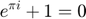
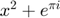

Contents
%UNIVERSIDAD NACIONAL DE COLOMBIA % Multi Vehicle automated drivring %Autor: Nestor Ospina clear close all clc % %---------laptop asus addpath(genpath('C:\gurobi950\win64\matlab'))%GUROBI addpath(genpath('C:\Users\nesto\OneDrive\Documentos\YALMIP-master'))%yalmip yalmip('clear')
PROGRAM
Model data
nx = 1; % Number of agents nu = 1; % Number of inputs nv = 2; %numero de vehiculos sin el agente no cooperativo % MPC data Q = 1 * eye(1); R = 10 * eye(1); N = 5; %horizon 5 T = 0.3; %[s] Ds = 15; %Safety distance [m] Dl = 20; %lateral distance V_max = 80; A_max = 30; L = 6; %number of lanes Mmax = L - 1; mmin = -L + 1; p_max = 1; %------------desired states----------- Zd = sdpvar(1, 1); %carril deseado Vd = sdpvar(1, 1); %velocidad deseada DS = sdpvar(1, 1); %velocidad deseada % -------------local vehicle--------------- v = sdpvar(ones(1, N + 1), ones(1, N + 1)); %velocidad del vehiculo actual a = sdpvar(ones(1, N), ones(1, N)); %aceleracion actual del vehiculo z = intvar(ones(1, N + 1), ones(1, N + 1)); %carril actual ll = binvar(ones(1, N), ones(1, N)); %paso izquierda lr = binvar(ones(1, N), ones(1, N)); %paso derecha % -------------- neighboor --------------- lr2 = binvar(1, 1); %paso derecha v_2 = sdpvar(1, 1); v_3 = sdpvar(1, 1); %velocidad del otro vehculo z_2 = sdpvar(1, 1); z_3 = sdpvar(1, 1); %carril del vehiculo j % ------ distance between two vehicles ------ dis12 = sdpvar(ones(1, N + 1), ones(1, N + 1)); %distancia entre vehiculo 1 y 2 dz = intvar(ones(1, N + 1), ones(1, N + 1)); %z2-z1
neihborhood variables
a12 = binvar(ones(1, N), ones(1, N)); b12 = binvar(ones(1, N), ones(1, N)); ab12 = binvar(ones(1, N), ones(1, N)); n12 = binvar(ones(1, N), ones(1, N)); th12 = binvar(ones(1, N), ones(1, N)); f12 = sdpvar(ones(1, N), ones(1, N)); g12 = sdpvar(ones(1, N), ones(1, N)); h12 = sdpvar(ones(1, N), ones(1, N)); k12 = binvar(ones(1, N), ones(1, N)); del12 = binvar(ones(1, N), ones(1, N)); r1_12 = binvar(ones(1, N), ones(1, N)); kk12 = binvar(ones(1, N), ones(1, N)); dell12 = binvar(ones(1, N), ones(1, N)); r2_12 = binvar(ones(1, N), ones(1, N)); xl_12 = binvar(ones(1, N), ones(1, N)); xr_12 = binvar(ones(1, N), ones(1, N)); xlr_12 = binvar(ones(1, N), ones(1, N)); xrr_12 = binvar(ones(1, N), ones(1, N)); xa_12 = sdpvar(ones(1, N), ones(1, N)); xb_12 = sdpvar(ones(1, N), ones(1, N)); xc_12 = sdpvar(ones(1, N), ones(1, N)); xd_12 = sdpvar(ones(1, N), ones(1, N)); d12 = binvar(ones(1, N), ones(1, N)); u12 = binvar(ones(1, N), ones(1, N)); v12 = binvar(ones(1, N), ones(1, N)); x12 = binvar(ones(1, N), ones(1, N)); rd12 = binvar(ones(1, N), ones(1, N)); ps12 = binvar(ones(1, N), ones(1, N)); p12 = intvar(ones(1, N), ones(1, N)); s12 = intvar(ones(1, N), ones(1, N));
making the optimizer longitudinal
constraints = []; % constraints = [constraints, diff([p_z z{1}]) == 0]; objective = 0; for k = 1:N objective = objective + (v{k + 1} - Vd)' * Q * (v{k + 1} - Vd); % calculate obj % Feasible region constraints = [constraints, 0 <= v{k + 1} <= V_max, %no exceda las velocidades -A_max <= a{k} <= A_max]; constraints = [constraints, v{k + 1} == v{k} + T * a{k}]; %velocidad futura % ---------------------------------------vehiculo 2------------------------------- % ------------------ si dz=0 -------------------->>> dij >= Ds---------------- constraints = [constraints, dis12{k + 1} == dis12{k} + T * (v_2 - v{k})]; %................................... (12)............................... constraints = log_min(constraints, n12{k}, dz{k}, 0); constraints = log_may(constraints, th12{k}, dz{k}, 0); constraints = log_and(constraints, a12{k}, n12{k}, th12{k}); %................................... (13)............................... constraints = log_may(constraints, b12{k}, dis12{k}, 0); %................................... (18)............................... constraints = log_and(constraints, ab12{k}, a12{k}, b12{k}); %................................... (21)............................... constraints = log_imp(constraints, f12{k}, dis12{k}, ab12{k}); %................................... (22)............................... constraints = log_imp(constraints, g12{k}, Ds, a12{k}); %................................... (23)............................... constraints = log_imp(constraints, h12{k}, dis12{k}, a12{k}); %................................... (24)............................... constraints = [constraints, -2 * f12{k} + g12{k} + h12{k} <= 0]; % It is EXTREMELY important to add as many % constraints as possible to the binary variables end parameters_in = {Vd, v{1}, [dz{:}], ... v_2, dis12{1}}; %, Aa1 , Bb1 , Ss1 , Nn1}; %, Gg1 solutions_out = {[a{:}], [v{:}], [dis12{:}] ,[a12{:}], [b12{:}], [ab12{:}], [f12{:}] ... ,[g12{:}], [h12{:}] }; control_front = optimizer(constraints, objective, sdpsettings('solver', 'gurobi'), parameters_in, solutions_out);
making the optimizer lateral
constraints = []; objective = 0; for k = 1:N objective = objective + (z{k + 1} - Zd)' * R * (z{k + 1} - Zd); % calculate obj % Feasible region constraints = [constraints, z{k} - lr{k} <= z{k + 1}, z{k + 1} <= z{k} + ll{k}, 1 <= z_2 <= L, %tome valores posibles 1 <= z{k+1} <= L]; constraints = [constraints, ll{k} + lr{k} <= 1]; % ---------------------------------------vehiculo 2------------------------------- constraints = [constraints, mmin <= z_2 - z{k + 1} <= Mmax]; %................................... (15.a)............................... constraints = log_min(constraints, k12{k}, z_2-z{k} , 1); constraints = log_may(constraints, del12{k}, z_2-z{k} , 1); constraints = log_and(constraints, r1_12{k}, k12{k} , del12{k} ); %................................... (15.b)............................... constraints = log_min(constraints, kk12{k}, z_2-z{k} , -1); constraints = log_may(constraints, dell12{k}, z_2-z{k} , -1); constraints = log_and(constraints, r2_12{k}, kk12{k} , dell12{k} ); %................................... (17)............................... constraints = log_min(constraints, u12{k}, dis12{k} , Dl); constraints = log_may(constraints, v12{k}, dis12{k} , -Dl); constraints = log_and(constraints, x12{k}, u12{k} , v12{k} ); %................................... (30)............................... constraints = log_and(constraints, xl_12{k}, x12{k} , ll{k}); constraints = log_and(constraints, xr_12{k}, x12{k} , lr{k}); %................................... (31)............................... constraints = log_and(constraints, xlr_12{k}, xl_12{k} , r1_12{k}); constraints = log_and(constraints, xrr_12{k}, xr_12{k} , r2_12{k}); %................................... (33)............................... constraints = log_imp(constraints, xa_12{k}, z{k+1} , xlr_12{k}); constraints = log_imp(constraints, xb_12{k}, z{k} , xlr_12{k}); constraints = log_imp(constraints, xc_12{k}, z{k+1} , xrr_12{k}); constraints = log_imp(constraints, xd_12{k}, z{k} , xrr_12{k}); %................................... (32)............................... constraints = [constraints, xa_12{k} - xb_12{k} + xc_12{k} - xd_12{k} <= 0]; constraints = [constraints, 0 <= xa_12{k} - xb_12{k} + xc_12{k} - xd_12{k} ]; % It is EXTREMELY important to add as many % constraints as possible to the binary variables end constraints = [constraints, [dis12{1} <= 100000]]; parameters_in = {Zd, z{1}, z_2, [dis12{:}]}; %, Aa1 , Bb1 , Ss1 , Nn1}; %, Gg1 solutions_out = {[z{:}], [ll{:}], [lr{:}], [r1_12{:}] ,[r2_12{:}] ... ,[x12{:}], [xl_12{:}], [xr_12{:}], [xlr_12{:}] ... ,[xrr_12{:}], [xa_12{:}] ... ,[xb_12{:}], [xc_12{:}], [xd_12{:}]}; control_lat = optimizer(constraints, objective, sdpsettings('solver', 'gurobi'), parameters_in, solutions_out);
Building variables
%.....................vehiculo 1.......................... % ..........historial de las predicciones hist_vp1 = []; hist_zp1 = []; hist_vp2 = []; hist_zp2 = []; %------condiciones iniciales---------- vel = [20; 20]; % velociodad inicial Vdes = [30; 80]; %velocidad deseada zel = [1; 2]; %carril inicial Zdes = [5; 5]; %carril deseado acel = [0 0]'; %---distancia inicial de cada agente d1i = [-30]'; % hold on vhist = vel; zhist = zel; ahist = acel; dhist = d1i; mpciter = 0; hist_r1 = []; hist_d1 = []; hist_x1 = []; hist_rd1 = []; hist_ps1 = []; hist_p1 = []; hist_s1 = []; hist_del1 = []; hist_r2 = []; hist_d2 = []; hist_x2 = []; hist_rd2 = []; hist_ps2 = []; hist_p2 = []; hist_v2 = []; hist_ul2 = []; hist_ll1 = []; hist_lr1 = []; hist_ll2 = []; hist_lr2 = []; hist_dz = []; hist_dis1 = []; hist_dis2 = []; AA = []; BB = []; CC = []; DD = []; EE = []; FF = []; GG = []; HH = []; II = []; JJ = []; KK = []; hist_a12 = []; hist_b12 = []; hist_ab12 = []; hist_f12 = []; hist_g12 = []; hist_h12 = [];
Optimization
i = 0; zel2 = zel; %same dimentions time = 20; tic sim_tim = 20; LR2 = [1]; LR1 = [1]; dif_z = ones(1,N+1)*[zel(2)-zel(1)]; for i = 1:30
% ###################### VEHICULO 1 ####################### %......................... solver Frontal ............................ inputs1 = {Vdes(1), vel(1), dif_z,... vel(2), d1i(1)}; %, alogic1_1 , blogic1_1 , S1logic_1 , N1logic_1}; [solutions1, diagnostics] = control_front{inputs1}; A = solutions1{1}; acel(1) = A(:, 1); V = solutions1{2}; hist_vp1 = [hist_vp1; V]; dis = solutions1{3}; dis(1) = d1i(1); if diagnostics == 1 error('control_front failed 1'); end hist_dis1 = [hist_dis1; dis]; %......................... solver lateral ............................ inputs2 = {Zdes(1), zel(1), zel(2), dis}; [solutions2, diagnostics] = control_lat{inputs2}; Z = solutions2{1}; zel2(1) = Z(:, 2); hist_zp1 = [hist_zp1; Z]; I = solutions2{2}; hist_ll1 = [hist_ll1; I]; J = solutions2{3}; hist_lr1 = [hist_lr1; J]; LR1 = J(:, 1); AA = [AA; solutions2{4}]; BB = [BB; solutions2{5}]; CC = [CC; solutions2{6}]; DD = [DD; solutions2{7}]; EE = [EE; solutions2{8}]; FF = [FF; solutions2{9}]; GG = [GG; solutions2{10}]; HH = [HH; solutions2{11}]; II = [II; solutions2{12}]; JJ = [JJ; solutions2{13}]; KK = [KK; solutions2{14}]; if diagnostics == 1 error('control_lat failed 1'); end % ###################### VEHICULO 2 ####################### %......................... solver Frontal ............................ inputs1 = {Vdes(2), vel(2), -dif_z,... vel(1), -d1i(1)}; %, alogic1_1 , blogic1_1 , S1logic_1 , N1logic_1}; [solutions1, diagnostics] = control_front{inputs1}; A = solutions1{1}; acel(2) = A(:, 1); V = solutions1{2}; hist_vp2 = [hist_vp2; V]; dis = solutions1{3}; dis(1) = -d1i(1); hist_a12 = [hist_a12; solutions1{4}]; hist_b12 = [hist_b12; solutions1{5}]; hist_ab12 = [hist_ab12; solutions1{6}]; hist_f12 = [hist_f12; solutions1{7}]; hist_g12 = [hist_g12; solutions1{8}]; hist_h12 = [hist_h12; solutions1{9}]; if diagnostics == 1 error('control_front failed 2'); end

<FILENAME.PNG> 
{kind=link}
for x = 1:10 disp(x) end
hist_dis2 = [hist_dis2; dis];
%......................... solver lateral ............................
inputs2 = {Zdes(2), zel(2), zel(1), dis}; %, alogic1_2 , blogic1_2 , S1logic_2 , N1logic_2}; %G1logic_1
[solutions2, diagnostics] = control_lat{inputs2};
Z = solutions2{1}; zel2(2) = Z(:, 2); hist_zp2 = [hist_zp2; Z];
II2 = solutions2{2}; hist_ll2 = [hist_ll2; II2];
JJ2 = solutions2{3}; hist_lr2 = [hist_lr2; JJ2]; LR2 = JJ2(:, 1);
if diagnostics == 1
error('control_lat failed 2');
end
%----------------------------------------------------------------------
zel= zel2;
dif_z = [hist_zp2(end,:) - hist_zp1(end,:)];
d1i = d1i + T * (vel(2:nv) - ones((nv - 1), 1) * vel(1));
vel = vel + T * acel;
vhist = [vhist vel];
zhist = [zhist zel];
ahist = [ahist acel];
dhist = [dhist; d1i];
hist_dz = [hist_dz; dif_z];
% pause(0.05)
mpciter;
mpciter = mpciter + 1;
end toc disp("it's done")
Elapsed time is 1.159174 seconds. it's done
plot
vphist = cat(3, hist_vp1, hist_vp1);
zphist = cat(3, hist_zp1, hist_zp2);
Draw_object(vhist, zhist, vphist, zphist, dhist, T, 0.1)
% save('myFile5.mat','vhist','zhist','vphist','zphist','dhist','T')